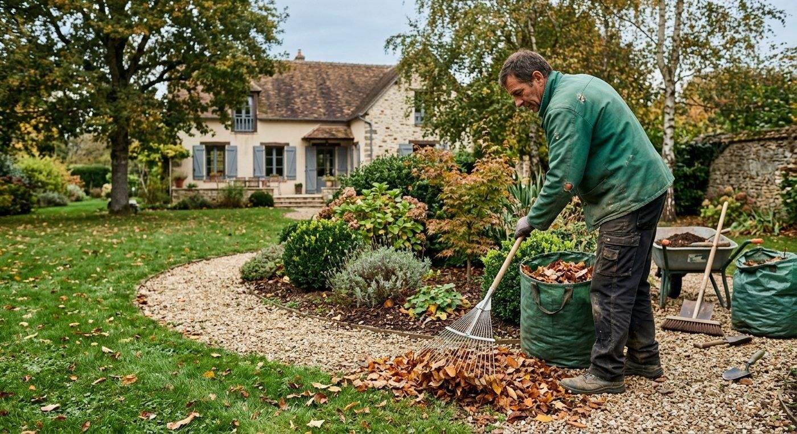

Printemps
- Reprendre la tonte dès que l'herbe pousse.
- Planter les vivaces et les arbustes.
- Désherber les massifs avant que les herbes ne s'installent.
- Pailler pour garder l'humidité du sol.
Des repères généraux pour entretenir votre jardin tout au long de l'année. Chaque terrain est différent : pour un avis sur le vôtre, parlons-en.

Des conseils généraux, à adapter selon votre sol, votre exposition et vos plantations.

Décrivez votre terrain et ce qui vous pose problème : nous en discutons ensemble.